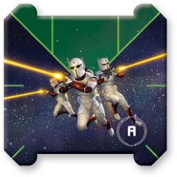
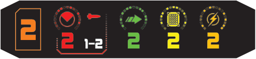

Commando Team

Commando team is a remote.

Types: Device, Remote.
When this device is dropped, it can be placed by sliding either its front or rear guides into the opposite end of the template.
System and End Phase: No effect.
Activation Phase: At the start of this phase, the commando team's controlling player may choose a [1 ], [2 ], or [1 ] template and place it in the commando team's front guides. The player then relocates the remote forward, placing the commando team's rear guides at the other end of the template. The commando team can be placed overlapping an object in this way. If multiple players have commando teams, player order is used to determine the sequence (similar to ships). If the commando team overlaps a ship, use the position marker to denote the ship’s position, then place the ship on top of the remote.
Engagement Phase: You cannot attack if there are enemy ships at range 0. Your primary attack is a range 1–2 attack. To perform an attack you must spend 1 . While you perform an attack, you may change 1 result to a result.
Other Rules: After an enemy ship overlaps a commando team, that ship gains 1 strain token. After a commando team is placed while being dropped or relocating, if it is placed underneath one or more enemy ships, those ships each gain 1 strain token.